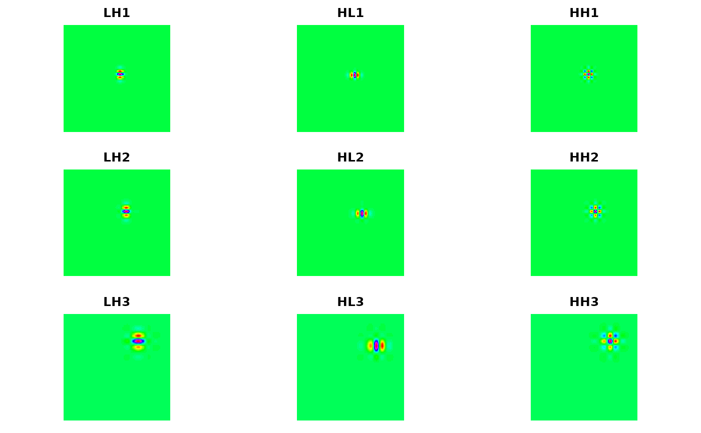
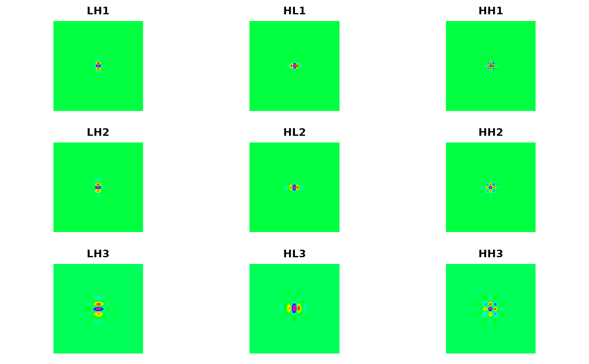

shift.2d.RdCompute phase shifts for wavelet sub-matrices based on the ``center of energy'' argument of Hess-Nielsen and Wickerhauser (1996).
shift.2d(z, inverse=FALSE)| z | Two-dimensional MODWT object |
|---|---|
| inverse | Boolean value on whether to perform the forward or inverse operation. |
Two-dimensional MODWT object with circularly shifted coefficients.
The "center of energy" technique of Wickerhauser and Hess-Nielsen (1996) is employed to find circular shifts for the wavelet sub-matrices such that the coefficients are aligned with the original series. This corresponds to applying a (near) linear-phase filtering operation.
Hess-Nielsen, N. and M. V. Wickerhauser (1996) Wavelets and time-frequency analysis, Proceedings of the IEEE, 84, No. 4, 523-540.
Percival, D. B. and A. T. Walden (2000) Wavelet Methods for Time Series Analysis, Cambridge University Press.
Brandon Whitcher
n <- 512
G1 <- G2 <- dnorm(seq(-n/4, n/4, length=n))
G <- 100 * zapsmall(outer(G1, G2))
G <- modwt.2d(G, wf="la8", J=6)
k <- 50
xr <- yr <- trunc(n/2) + (-k:k)
par(mfrow=c(3,3), mar=c(1,1,2,1), pty="s")
for (j in names(G)[1:9]) {
image(G[[j]][xr,yr], col=rainbow(64), axes=FALSE, main=j)
}

Gs <- shift.2d(G)
for (j in names(G)[1:9]) {
image(Gs[[j]][xr,yr], col=rainbow(64), axes=FALSE, main=j)
}
